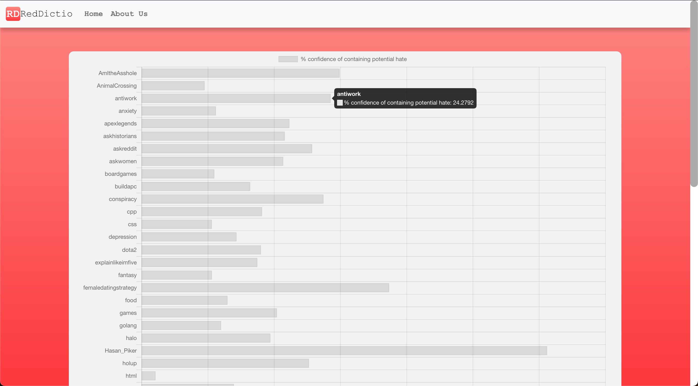
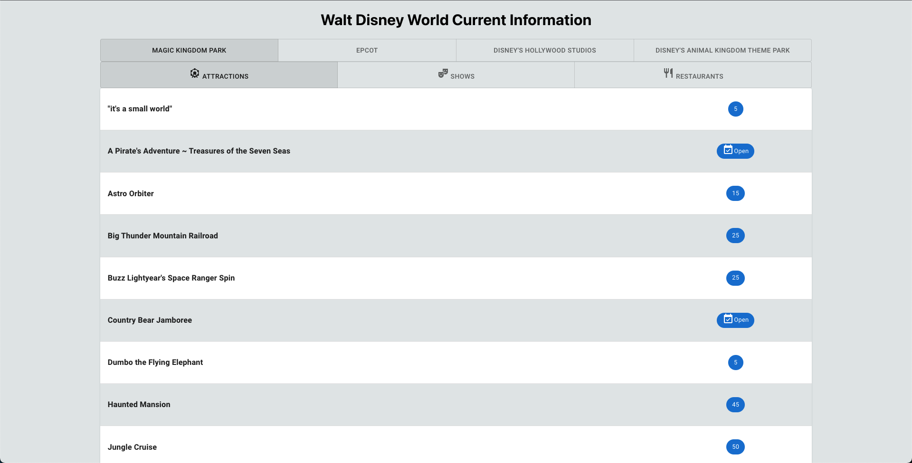
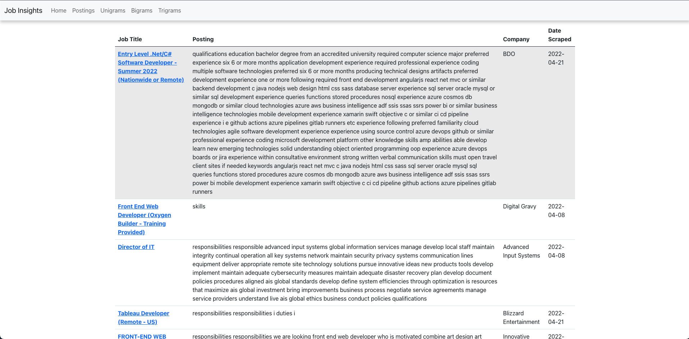
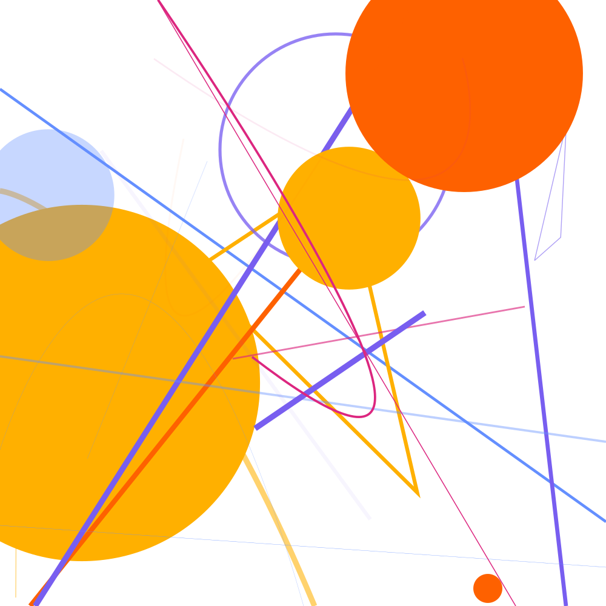

Python, Flask, API, Google Cloud, AWS, Docker, SQL, Keras

Utilizing machine learning, to analyze subreddit comments for hate/toxicity.
RedDictio is overall a test of our ability to create a webpage, hook it up to a hosted database, scrape
data from reddit, and judge this data using a neural network. It connects to several fields in computing
such as Database Design, Data Engineering, Data Science, Machine Learning, Cloud Computing, and Web
Development.
React, NodeJS, Javascript, RESTful API, GitHub Pages

React Web App that displays current wait times, next show time, and restaurant walk up availability for
each Walt Disney World Theme Park.
Displays the wait time/status of every ride, the show status/next showing, and restaurant walk up
availability at the main four Walt Disney World Themeparks by utilzing themepark.wiki's RESTful API.
Military-to-Civilian Terminology Translation Tool: Analysis of
Job Data in Technology
Website | Github
Python, Flask, AWS, NLP, mySQL, Github, Docker, Jira, Beautiful Soup

Using real job postings to help veterans make resumes to transition from military to civilian jobs.
Part of my senior project, my teammates and I developed a system which scrapes indeed for job postings
in tech related fields. We then use NLP to analyze this data. This data is then made available to be
used in resume creation. The user is able to see the sources of each data post and even go to the
original job posting, if they want to apply to that job.
Python, Hackathon, Award-Wining, Pycairo, SVG, NumPy

Randomly generated art that intentionally uses a color-blind-friendly color palette.
Art should be accessible. Approximately
5% of the world has some form of color blindness. Often times, when something is
being designed, color blindness is not something taken into consideration. The designers aren't
being malicious, people don't always think about issues that don't affect them. My program makes a
conscious effort to be
inclusive to people with color blindness by using a color-blind-friendly color
palette. The program randomly generates art and saves it in a .svg file. The background
color, number of shapes, and types of shapes are all randomized. By using .svg files, the art has
the ability to have lossless scalability.
Requirements Engineering & Analysis for senior
project/internship
Jira, Confluence, Figma, Draw.io, SWEBOK, 29148-2018

Semester long project creating creating comprhensive documentation for my senior project/internship (See Below).
Utilizing Atlassian's Jira and Confluence software, I created the documentation for the
Buisness Analysis,
Buisness Requirements Specification(BRS),
Functional Boundary,
Requirements,
Mockup,
Problem Statement,
Requirement Traceability Matrix,
System Requirements Specification(SRS), and
User Characteristics.
All the documentation was based off my senior project/internship. It was all hypothetical, from before
we
truly began to work on the project, so the documentation and final result do not 100% match.
This was expected when starting this process.
Other Projects